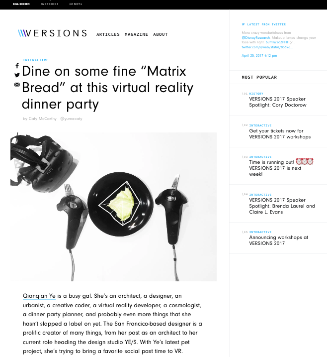

VR Supper Club
2017
"Can we have 3D printed super food that is sci-fi looking?", I often wonder. "Oh hey! We should get dinner together soon", you might hear. YE'S Supper Club is a Virtual Reality Dining Experience I designed & developed in Unity3D. This VR experience includes 4 course meal, wine pairing plus a secret box of ice cream. The player will see a dining table with food, utensils and an abstract dinning partner sitting across table. The 4 course meal is explained by the 360 degree menu around the player. Next step: I am trying to add more social interaction activities with dining partners. I started with designing and modeling 4 types of food with Rhino/Grasshopper. Then I designed the user interface by SketchApp and Adobe Illustrator. While in Unity3D, I developed all the physics to allow players to pick up, throw, drop, and use held objects. Come dine with me in VR! Please check the demo on Vimeo. Source code for this project is on Github. And you can check an Interview about this project by Caty McCarthy from VERSIONS.
Info
Time: 01/2017, 3 Days
Tools: Rhino/Grasshopper, Unity3D, C#, SketchApp, Adobe Illustrator, iMovie
Type: Individual Work
Category
Virtual Reality
Experience Design
Future of Things
Branding
Press
Interview with Versions @ Killscreen Link.
Overal Setting in Unity3D

Generated Abstract Dining Partner

While in 'Reality'

Dining Table Layout Design

Physics-based interaction on the Vive Controller

Rhino/Grasshopper Generated Food